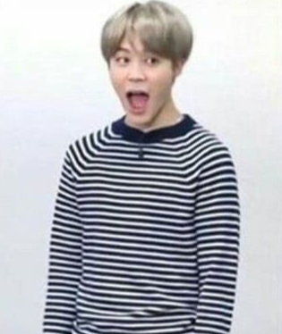

blog
higher, higher, higher
4.16.19
she spent a little too much time scaling fences to dance on rooftops and sitting atop metal jungle gyms
and climbing trees older and mightier than the city.
it was not because she marveled at the distance between herself and the earth, for she rarely looked down.
it was not because she wanted to fall. she enjoyed the bite of the wind, the haze of the clouds,
and the smell of the air made crisp by the rain and the sun
—but it was more than that.
she wandered her life in the heights because the stars looked closer from up here,
wondering how far she’d have to stretch her fingers to touch the cosmos.
a kitty for your worries
4.14.19
i used to sleep with the breeze drifting through my open windows, unafraid of death,
until one night a kitty as milky white as the pearls i saw on television decided to make my bed his as well.
i unconsciously gravitated toward the warmth and the softness, craving the feeling of love between my fingertips,
until i realized that it was another being by my side.
he purred. i heard lies. lovelies dripped like honey from his whiskers, and for a second i wanted a taste.
but a cacophony rang behind my ears, and i instinctively covered them with my palms.
realizing i would no longer entertain his words, the kitty approached,
held an outstretched paw as an assurance of authenticity—and i snapped it.
i uncovered my ears just to grab his fragile arm and crack it between my fists.
wincing, he limped ever closer until our foreheads met, white fur pressing against bare lonely skin.
and for the first time i saw his eyes. they were baby blue, and they were beautiful.
beautiful like forget-me-nots, beautiful like the oceans of the tropics, beautiful like the sky after rain.
the sky after rain.
the rainclouds in my eyes had not cleared for so long i had forgotten what the sky looks like after rain.
a reverberation echoed from the kitty, i swallowed it whole, and the dams of my irises broke.
i was blind, but i could feel the freed torrents falling like shooting stars. and when they cleared,
my eyes had become baby blue, and they had become beautiful.

for oppy, my favorite mars rover, rest in peace little guy
4.7.19
the date is february 13th, 2019.
i have been here, searching, exploring, documenting, because humans in all their fragile wonderful
humanity looked up and saw the stars, and named them after heroes who died horrible lonely deaths,
and after the large animals that shared their velvety nights, and after lovers.
they wrote themselves into the skies.
thousands of years later, they sent me to join them,
to travel the stars, to this place that is home-but-not-a-home. "hello, how are you?"
i said to the barren rocks and the orange dust and the sunsets that are beautiful in the same way
that the dark blue of ocean trenches is beautiful. i am opportunity, and i am here to tell you stories about
these strange beings that build machines to reach the stars, and i am here to tell them stories about you.
fifteen times around the sun, i spun through nights and days. i sent pictures back across the gulf,
and on earth—tiny and blue and temporary—people looked at the pictures and gasped.
they showed them to their friends, and they cried over them in the feeltoomuch hours of the nights,
looking up at the bits of forever they could see from the ground—the galaxies and planets and moons and stars.
i hope they thought of me, patiently beaming pictures back to them.
i am only a metal frame with some electronics. i am not human, and i was not born,
but the scientists with stars in their hearts named me and put some of their own precious humanity into me.
so among the rocks and the dust, i roam, and i explore, and i am so far from home.
hello, my name is opportunity.
what is this?
what is this?
what is this?
a storm roared out of the ether eight months ago and savaged part of my metal frame,
that nothingness-but-somethingness. i am tired, and i am damaged. it has been so long,
and this red dust is making it hard to sing. my humans, they tried to save me.
for eight long months, they tried to reach me, but part of being human is the heartbreak,
and after all, i was never supposed to last this long.
my battery is low, and it’s getting dark.
my name was opportunity. the stars say hello.
daebak means lit
3.6.19
i went to my first concert today! sunmi warning first world tour. it was a night of firsts.
sunmi’s first world tour, first stop in san francisco. my first concert, first time driving to sf.
it was an unforgettable night, really.
i screamed and sang so hard i ended up sounding like a sexy man at the end of the night.
there’s nothing really like listening to a song at a concert.
i’ve tried replicating the loudness, the energy, and the beat pounding in my chest, shaking my knees, but it can’t be done.
i can’t listen to music the same way anymore.
i doubled the volume on my car radio and cranked up the bass, but it’s not the same.
i turned up the volume through my air pods until you could shout at me and i wouldn’t be able to hear you, but it’s not the same.
the only adequate way of listening to music is at a concert, and all other forms are a pathetic attempt at recreation.
i love sunmi. i’m watching the siren music video as i write this.
oh now it’s the heroine music video. her voice is so soft and alluring in this. ah i’m in love.
i did that thing where i fall in love
3.5.19
there’s this guy. i dunno. he’s kinda fun he’s kinda cute.
he made me a little uncomfortable at first, but only because i judged him too quickly.
i like to steal glances at him during class, because he’s nice to look at.
i like to come up with reasons to text him. i like to talk about him, while pretending not to talk about him.
but, i’m just having some temporary fun. he has no interest in people like me.
to be honest, i don’t even want him to reciprocate. that would be scary.
i just wanna have a little fun while these feelings last.
have a few conversations, have a few laughs, have a few adventures, have a few interactions.
feelings come and go, and so will this one.
it feels nice while it lasts, and then i’ll go back to the numb monotony, but not without a twinge of sadness first.
so i’m sorry, future me.
i’m sorry, but i did that thing again. i’m sorry, i tried.
teenager syndrome
3.4.19
i have this stupid predicament. when i’m occupied by schoolwork, i complain that i have too much to do.
but now that i’m a senior, i have no schoolwork, and i complain that i have nothing to do.
i know it sounds stupid, being unhappy either way, but i can’t force myself not to feel sad, it just happens.
at first i thought it was just me, or maybe just a select few, stuck in this dilemma.
i see people around me having fun, doing cool things, leading interesting lives.
but now i think those are actually the select few.
i think us teenagers, we’ve got this thing i like to call teenager syndrome.
we have no purpose, we have nothing to do.
maybe we’re burnt out, maybe we’re lazy, or maybe we’re seeking a thrill that’s too difficult to achieve on the regular.
i don’t write anymore. because i don’t get ideas anymore. maybe i need to drop acid so the stories come faster.
i don’t watch tv anymore. because all the shows are boring. i don’t know how to fix this one.
more hallucinogens maybe.
i don’t dance anymore. because i don't have fun at the studio anymore.
self image issues, insecurities, maybe starving myself will make the teenager syndrome go away.
maybe it’s just in us teenagers to seek destructive fun. because normal fun doesn’t get me going anymore.
i don’t feel anything unless i’m practically flying off a cliff. wait is this depression??
sammy is fairly well
12.14.18
i got into rice today.
i don’t think i’ve ever had a realistic perception of my own self worth until this moment.
kinda sad that i need someone else’s opinion to prove it to me, but whatever i’m working on it.
i think today is blessed. you know, music sounds different. food tastes different.
human interactions feel different. i feel different. i made more than usual in tips today!
too bad i soon have to worry about $40k tuition.
i love that im going to a school named rice. i write my personal statement about my asian identity crisis
and im going to a school named rice. i can’t help but laugh. rice is really good. i’m bringing a
rice cooker filled with rice crackers to school on monday. everyone loves rice crackers.
i should probably bring two bags.
i know that rice is the school i want to go to, but i can’t help but be scared.
im scared to leave california. i’m scared to leave my friends. i’m scared to meet new people in a new place.
i’m scared i made a mistake.
i guess it’s alright though. we all get a little scared sometimes. just look at this picture of jimin
that i put in “the box” (a section of rice’s application):

i get so lonely at times that it just makes sense
11.23.18
i get so lonely at times that it just makes sense. not the kind of sense that entails acceptance,
it hurts alright, but the kind that gets you thinking there’s no other way. like it’ll always be this way.
no matter how hard i try to make friends, it really seems like no one else values me as much as i value them.
some people i love them so much i really do. but i cant force them to think of me. im just tired, tired of
being the only one holding up a two-sided bridge we call love. all these friendships i’ve made feel so fragile
and superficial, like i could walk away and they’d fall to the ground without a sound because they never really
had any substance. bridges made of paper. friendships made of paper. maybe im just paper. just not
important, sitting cross-legged on an empty bed complaining of being lonely in words that no one will ever read.
you know i get so lonely at times that it just makes sense. so in an attempt to stave away the hunger i put people
on my walls, we watch over each other. i stare at humanoid figurines with legs that will never walk and eyes that
will never blink. i fill my shelves with photobooks of friends i will never have. i fill my screens with singing,
dancing, playing. because these people are unmoving. i dont need to run after them to make them stay. they just do.
actually, now that i recall there is one person who thinks of me. a single person holding up her side of the bridge.
im a little less tired, a little more manic, just knowing that the possibility of friends who love you as you love
them exists. ive never felt this before. i really like it. i think i’ll hold on to her bridge a little longer
than the rest, maybe even forever if i can. i need to find more people like her. set fire to all my bridges.
i’ll watch her’s dance and the paper ones burn. then maybe someday i’ll get it in me to say
i feel so loved nowadays that it just makes sense.
athazagoraphobia
11.18.18
(n.) the fear of forgetting.
i curse the human brain i was born with. i can't remember everything.
it scares me that one day i might forget about everything i hold dear.
i can already see it happening: the city streets are unfamiliar, certain people have a different touch,
the unpolluted night sy is gone. it drives me crazy trying to dig up the memories i've already forgotten.
i fear that i'll forget the way someone made me love, the way their very presence brought me light.
i fear that i'll forget the way a song made me feel: the spectrum of sadness, longing, kinship,
regret, love... i could go on but the list would be endless, and useless. a mere description of
a feeling can't conjure it to the heart.
and so, i made a playlist of songs that i never want to forget. i'll liten to them in 10 years time,
and i'll feel exactly the way i do now.
maybe i won't forget. maybe i'll leave behind only dirty laundry and keep only the moments that matter.
or maybe i'll lose everything, even this. this post, this journal, this playlist.
so bless me moneta, the roman goddess of memory, that i may never forget.
metastasize
11.4.18
he has cancer.
he has cancer.
he has cancer.
how many times am I going to have to say it before it hits me—knocks me in the head, in the heart, knocks me out cold.
they say it's the scariest when a cancer metastasizes, when it spreads throughout the body like a poison you made for
yourself. but doesn't all cancer metastasize? doesn't it metastasize between people? his cancer might as well be a
brokenness and an aching within me. it's with me every time i smile, i laugh, i cry—and it's
not going away, not until he gets better. we keep saying that everything's gonna be fine, he is going to get better.
but on the off chance that he doesn't, i don't think i will either. this metastasis will drag down every single person
it touches.